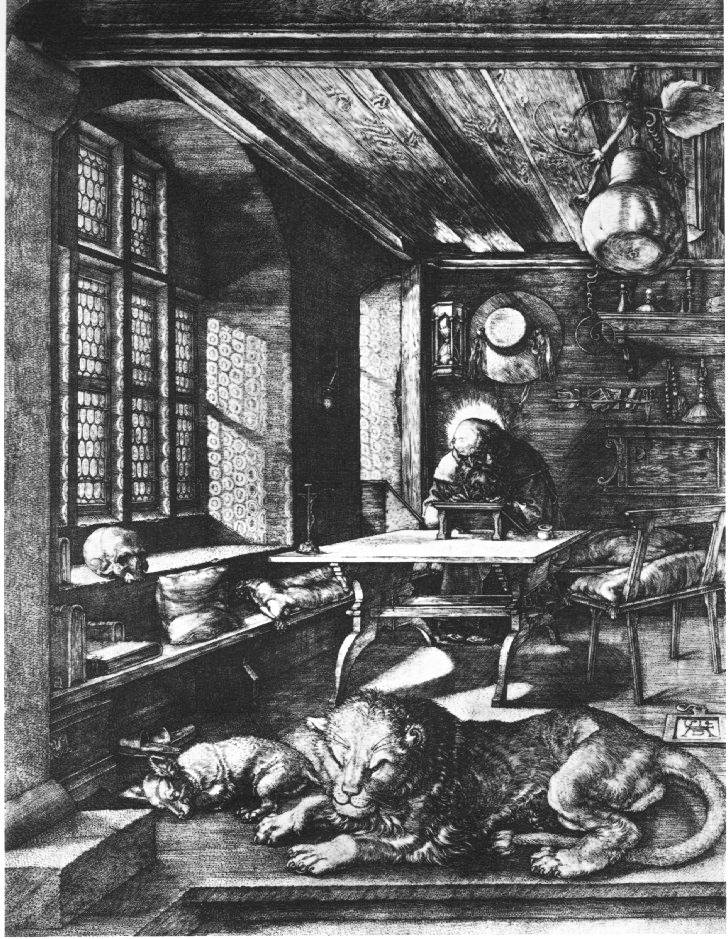

<!DOCTYPE html>
<html class='no-js' lang='en'>
<head>
<meta charset='utf-8'>
<title>Mémoires et soutenances &mdash; CETL – Centre Européen de Traduction Littéraire</title>
<meta content='Centre Européen de Traduction Littéraire. Avec le soutien de la Communauté française de Belgique, de la Commission communautaire française.' name='description'>
<meta content='traduction, traduction littéraire' name='keywords'>
<meta content='Françoise Wuilmart' name='author'>
<meta content='Mémoires et soutenances &amp;mdash; CETL – Centre Européen de Traduction Littéraire' name='DC.title'>
<meta content='width=device-width, initial-scale=1' name='viewport'>
<link href="../../stylesheets/styles-79adecb8.css" rel="stylesheet" />
<link href='/humans.txt' rel='author'>
<link href='favicon.ico' rel='shortcut icon'>
<script>
  (function(i,s,o,g,r,a,m){i['GoogleAnalyticsObject']=r;i[r]=i[r]||function(){
  (i[r].q=i[r].q||[]).push(arguments)},i[r].l=1*new Date();a=s.createElement(o),
  m=s.getElementsByTagName(o)[0];a.async=1;a.src=g;m.parentNode.insertBefore(a,m)
  })(window,document,'script','//www.google-analytics.com/analytics.js','ga');
  ga('create', 'UA-2826331-7', 'auto');
  ga('require', 'displayfeatures');
  ga('send', 'pageview');
</script>

</head>
</html>

<body class='page'>
<!--[if lte IE 8]><p class='browser-upgrade'>You are using an
<strong>outdated</strong>
browser. Please
<a href="http://browsehappy.com/" rel="external" target="_blank">upgrade your browser</a>to improve your experience.</p><![endif]-->

<header class='banner navbar navbar-default navbar-static-top' role='banner'>
<div class='container'>
<div class='navbar-header'>
<button class='navbar-toggle' data-target='.navbar-collapse' data-toggle='collapse' type='button'>
<span class='sr-only'>Toggle navigation</span>
<span class='icon-bar'></span>
<span class='icon-bar'></span>
<span class='icon-bar'></span>
</button>
<a class='navbar-brand' href='/'>CETL</a>
</div>
<nav class='collapse navbar-collapse' role='navigation'>
<ul class='nav navbar-nav' id='menu-primary-navigation'>
<li class=''>
<a href="/le-cetl/direction/">Direction</a>
</li>
<li class=''>
<a href="/seminaires-presentiel/">Séminaires en présentiel</a>
</li>
<li class=''>
<a href="/ateliers-visio/">Ateliers en visio-conférence</a>
</li>
<li class=''>
<a href="/articles/">Articles</a>
</li>
<li class=''>
<a href="/liens/">Liens</a>
</li>
<li class=''>
<a href="/contact/">Contact</a>
</li>
</ul>
</nav>
</div>
</header>

<div class='jumbo-background hidden-xs'>
<div class='container'>
<div class='row'>
<div class='col-12'>
<h1 class='jumbo-title'>Centre européen de traduction littéraire</h1>
</div>
</div>
</div>
</div>

<div class='wrap container' role='document'>
<div class='content row'>
<div class='col-sm-12 col-md-3 col-lg-3 hidden-xs sidebar sidebar-left'>
<ol class='menu' id='menu-submenu'>
<li class=''>
<a href="/le-cetl/manifeste-cetl/">Le manifeste du CETL</a>
</li>
<li class=''>
<a href="/le-cetl/fonctionnement-et-inscription/">Fonctionnement et inscription</a>
</li>
<li class=''>
<a href="/le-cetl/conditions-d-admission/">Conditions d’admission</a>
</li>
<li class=''>
<a href="/le-cetl/programmation-et-tarifs/">Programmation et tarifs</a>
</li>
<li class=''>
<a href="/le-cetl/examens/">Examens</a>
</li>
<li class='active'>
<a href="/le-cetl/memoires-et-soutenance/">Mémoires et soutenances</a>
</li>
<li class=''>
<a href="/le-cetl/le-diplome/">Le diplôme</a>
</li>
<li class=''>
<a href="/le-cetl/liste-des-enseignants/">Liste des enseignants</a>
</li>
</ol>
</div>

<div class='main col-sm-12 col-md-6 col-lg-6'>
<h1>
Mémoires et soutenances
</h1>
<h2>Présentation du mémoire et soutenance – Consignes générales.</h2>

<ol>
<li><p>Après deux années de formation, et si vous avez obtenu au moins 14/20 à l’examen de second niveau, vous aurez accès à la rédaction du mémoire qui seul vous donnera droit à un diplôme de fin d’études <a href="/le-cetl/le-diplome">(cf. Conception du diplôme)</a>.
Si vous ne souhaitez pas faire le mémoire, à défaut du diplôme vous recevrez une attestation mentionnant vos résultats pour les deux niveaux accomplis et réussis.</p></li>
<li><p>Pour la rédaction du mémoire vous disposez de trois années. Au-delà de ce délai, un supplément de 500 euros sera exigé par année de dépassement.</p></li>
<li><p>Vous devrez impérativement travailler sous la houlette d’un directeur de mémoire, qui sera un traducteur littéraire professionnel reconnu, de préférence enseignant au CETL. Vous pourrez choisir vous-même votre patron de mémoire, mais ce choix devra être avalisé par la direction du CETL.</p></li>
<li><p>Pour réussir le mémoire, il faut obtenir au moins 14/20. Pour que le travail soit publiable, il faut obtenir au moins 17/20. Si vous n’avez pas 17&nbsp;: vous pourrez revoir et améliorer votre traduction en suivant les consignes du jury.
Dans ce cas, l’alternative est donc&nbsp;:</p></li>
</ol>

<ul>
<li><p>Soit vous réclamez votre diplôme juste après la soutenance, avec la note de 14 au moins qui y sera mentionnée.</p></li>
<li><p>Soit vous décidez d’améliorer la première version et d’attendre d’avoir au moins 17 pour obtenir le diplôme.</p></li>
</ul>

<ol>
<li><p>Si vous n’avez pas obtenu 14/20 au terme de la soutenance, vous avez droit à une &quot;seconde chance&quot;. Vous devrez alors corriger le mémoire dans le sens indiqué par le jury et en tenant compte très précisément de ses remarques et commentaires (souvent notés dans le travail). Le travail revu et remanié sera envoyé sous forme électronique aux membres du jury. Il n’y aura pas de seconde soutenance.
Il n’y aura pas de troisième chance…</p></li>
<li><p>Le mémoire doit être remis en 5 exemplaires. Sa structure doit répondre à des normes précises et doit comprendre impérativement les parties mentionnées dans le règlement. Je vous rappelle que le mémoire est conçu comme un dossier destiné à convaincre un éditeur potentiel du bien-fondé de la publication de la traduction.</p></li>
<li><p>La soutenance se fait devant un jury composé du directeur de mémoire, d’un autre traducteur spécialiste de la même langue de départ, de la directrice du CETL et d’un critique littéraire, représentant de maisons d’édition. Cette soutenance se déroule généralement à Paris, au Centre National du Livre (CNL), ou à la Sorbonne nouvelle, ou dans une autre ville selon le cas (dans un collège de traducteur ou dans une université). Les frais de déplacement ou de séjour de l’étudiant sont à la charge du candidat. Le CETL prend en charge les honoraires du jury, et leurs frais de déplacement et/ou de séjour. Les modalités de déroulement de la soutenance vous seront communiquées en temps utiles.</p></li>
</ol>

<h2>Structure du mémoire</h2>

<ol>
<li><p>Table des matières</p></li>
<li><p>Introduction&nbsp;:
Présentation de l’auteur, évocation de son (éventuel) succès, dans son pays et/ou à l’étranger (joindre de préférence des articles de presse dans les annexes).
Résumé de l’ouvrage&nbsp;: le situer dans son contexte propre et ses éventuelles filiations, en faire une brève analyse et évoquer les raisons d’un accueil favorable dans la culture de la langue cible.</p></li>
<li><p>Traduction&nbsp;: le texte original doit figurer sur la page de gauche et la traduction (correspondant exactement) sur la page de droite, une soixantaine de pages au moins de 1500 signes.</p></li>
<li><p>Commentaires de traduction&nbsp;: le chapitre sans doute le plus important, après la traduction elle-même. Il doit faire état de vos réflexions pour ainsi dire «&nbsp;traductologiques&nbsp;» sur les difficultés générales et ponctuelles rencontrées lors de votre travail. Il proposera donc une analyse globale des difficultés inhérentes au texte lui-même (par exemple au contexte d’écriture, au registre, au style, au lexique etc.) et passera en revue les difficultés ponctuelles et vos choix justifiés.
Attention&nbsp;: cette partie ne doit nullement parler des difficultés de linguistique contrastive générale (passage d’une langue à l’autre hors contexte), mais des difficultés spécifiques du texte et de l’auteur.</p></li>
<li><p>Bibliographie&nbsp;: elle mentionnera tous les ouvrages du même auteur, y compris leurs traductions existantes, ainsi que tous les manuels ou sites Internet consultés pour le travail.</p></li>
<li><p>Annexes (articles de presse etc.), facultatif.</p></li>
</ol>

<h2>Quelques exemples de mémoires et de soutenances parmi une centaine</h2>

<h3>ANGLAIS au français</h3>

<p><strong>Carine Bratzlawsky</strong></p>

<p>Traduction de trente-quatre lettres (1907-1927) de Virginia Woolf à sa sœur Vanessa Bell Selected diaries, Vintage Classics, tiré de la correspondance en six volumes, The Hogarth Press/Chatto &amp; Windus, 1975-1980 ).</p>

<p>Directrice de mémoire&nbsp;: Anne-Marie Smith di Biasio</p>

<p>Soutenance au Centre National du Livre (CNL) Paris.</p>

<p>Note obtenue&nbsp;: <strong>87/100</strong></p>

<hr>

<p><strong>Elisabeth Lowys</strong></p>

<p>Traduction de quatre nouvelles tirées du recueil intitulé Other People We Married, de Emma Straub
(Five Chapters Books, 2011, New York)</p>

<p>Directeur de mémoire&nbsp;: Daniel Lemoine</p>

<p>Soutenance au Centre National du Livre (CNL) Paris</p>

<p>Note obtenue&nbsp;: <strong>98/100 (exceptionnel !)</strong></p>

<hr>

<p><strong>Yveline Pailhoux</strong></p>

<p>Traduction de Sept nouvelles de Sara Baume, parues dans divers journaux et magazines entre 2011 et 2016</p>

<p>Directrice du mémoire&nbsp;: Christine Raguet</p>

<p>Soutenance au Collège des traducteurs de Seneffe, Belgique</p>

<p>Note obtenue&nbsp;: <strong>86/100</strong></p>

<h3>ESPAGNOL au français</h3>

<p><strong>Annie Vignal</strong>
Traduction des chapitres I, II et X du roman d’Oscar Collazos «&nbsp;Rancoeurs&nbsp;» («&nbsp;Rancor&nbsp;», Seix Barral Biblioteca Breve, Tercera Edicion, 2006)</p>

<p>Directeur de mémoire&nbsp;: Albert Bensoussan</p>

<p>Soutenance à l’Institut anglophone, Université Sorbonne nouvelle, Paris</p>

<p>Note obtenue&nbsp;: <strong>85/100</strong></p>

<hr>

<p><strong>Cristina Lopez Devaux</strong></p>

<p>Montaner 18 (Chapitres I, II et III), José Antonio Garriga Vela.</p>

<p>Directeur de mémoire&nbsp;: Georges Tyras</p>

<p>Soutenance à l’Institut anglophone, Université Sorbonne nouvelle, Paris</p>

<p>Note obtenue&nbsp;: <strong>90/100</strong></p>

<h3>ALLEMAND au français</h3>

<p><strong>Delphine Bouillard</strong></p>

<p>Anmut und Gnade (p. 10 à 72) Wolfgang Schlüter</p>

<p>Directeur de mémoire&nbsp;: Marc de Launay</p>

<p>Soutenance à l’Institut anglophone, Université Sorbonne nouvelle, Paris</p>

<p>Note obtenue&nbsp;: <strong>90/100</strong></p>

<hr>

<p><strong>Isabelle Raison</strong></p>

<p>Fremde Signale, de Katarina FAber (Bilgerverlag, 2008)</p>

<p>Directrice de mémoire&nbsp;: Marie-Claude Auger</p>

<p>Soutenance au Centre national du livre (CNL) Paris</p>

<p>Note obtenue&nbsp;: <strong>82/100</strong></p>

<h3>SUEDOIS au français</h3>

<p><strong>Amanda Belassami-Sideris</strong></p>

<p>Min Mormor Hälsar och Säger Förlat, traduction des chapitres 1 à 6, Fredrik Backman –Ed. Forum 2013</p>

<p>Directrice de mémoire&nbsp;: Anna Gibson</p>

<p>Soutenance au Centre national du livre (CNL) Paris</p>

<p>Note obtenue&nbsp;: <strong>70/100</strong></p>

<h3>ITALIEN au français</h3>

<p><strong>Marylène di Stefano</strong></p>

<p>L’Abusivo, Antonio Franchini, Marsilio 2001, traduction des pages 7 à 70</p>

<p>Directeur de mémoire&nbsp;: Vincent Raynaud</p>

<p>Soutenance au Centre National du Livre( CNL) Paris</p>

<p>Note obtenue&nbsp;: <strong>75/100</strong></p>

<h3>RUSSE au français</h3>

<p><strong>Fanchon Deligne</strong></p>

<p>Présentation et traduction de deux textes autobiographiques de Vladislav Khodassevtich&nbsp;: Prime Enfance (1933) et Le Couloir blanc (1925)</p>

<p>Directeur de mémoire&nbsp;: Anne-Marie Tatsis-Botton</p>

<p>Soutenance au Collège des traducteurs d’Arles (CITL)</p>

<p>Note obtenue&nbsp;: <strong>94/100</strong></p>

<h3>FRANÇAIS au bosnien</h3>

<p><strong>Almira Drino</strong></p>

<p>Sélection de quatorze contes de Maurice Carême</p>

<p>Directeur de mémoire&nbsp;: Radivoje Konstantinovic</p>

<p>Soutenance à l’Université de Belgrade, Faculté des lettres romanes.</p>

<p>Note obtenue&nbsp;: <strong>95/100</strong></p>

<hr>

<p><strong>Bisera Cero</strong></p>

<p>Les Cavaliers, Joseph Kessel (pages 13 à 88)</p>

<p>Directrice de mémoire&nbsp;: Tijana Popovic</p>

<p>Soutenance à l’ISTI, Bruxelles</p>

<p>Note obtenue&nbsp;: <strong>95/100</strong></p>

<hr>

<p><strong>Azra Pita Parente</strong></p>

<p>Oscar et la dame rose – Monsieur Ibrahim et les fleurs du Coran (Eric Emmanuel Shmitt)</p>

<p>Directeurs de mémoire : Aleksander Grujicic et Radivoje Konstantinovic</p>

<p>Soutenance par visioconférence : janvier 2019</p>

<p>Note obtenue&nbsp;: <strong>95/100</strong> avec les félicitations du jury</p>

<hr>

<p><a href="/events">Voir la liste des soutenances à venir</a></p>

</div>
<aside class='sidebar hidden-xs hidden-sm col-md-3 col-lg-3' role='complementary'>
<div class='thumbnail'>

</div>
</aside>

</div>
</div>
<footer class='container' role='contentinfo'>
<div class='row'>
<div class='col-lg-12'>
<p class='text-center'>
© 2025 CETL – Centre Européen de Traduction Littéraire
</p>
</div>
</div>
</footer>

<script src='https://cdn.jsdelivr.net/lodash/4.17.4/lodash.min.js'></script>
<script src="../../javascripts/scripts-da39a3ee.js"></script>
</body>
